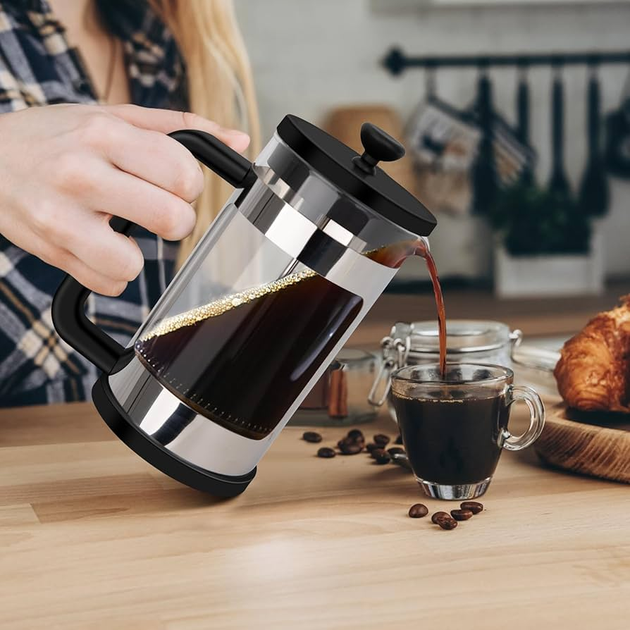
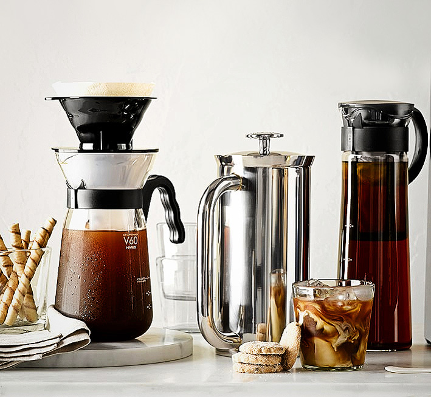

Teknik brewing adalah proses menyeduh kopi dengan cara mengekstrak rasa dari bubuk kopi menggunakan air. Proses ini bukan sekadar menuang air panas, tapi melibatkan berbagai faktor seperti suhu air, ukuran gilingan kopi, waktu seduh, hingga perbandingan antara kopi dan air.
Setiap detail dalam proses brewing sangat mempengaruhi hasil akhir di dalam cangkir. Perbedaan kecil saja seperti air yang terlalu panas atau gilingan kopi yang terlalu halus bisa mengubah rasa kopi secara signifikan, mulai dari terlalu pahit hingga terlalu asam.
Dalam dunia kopi, teknik brewing sering digunakan untuk menonjolkan karakter asli dari biji kopi. Metode ini memungkinkan rasa-rasa unik seperti fruity, chocolate, hingga floral muncul dengan lebih jelas, tergantung dari jenis kopi yang digunakan.
JENIS-JENIS TEKNIK BREWING

1. V60 (Pour Over)
V60 adalah salah satu metode brewing manual yang menggunakan alat berbentuk kerucut dengan filter kertas. Proses penyeduhannya dilakukan dengan menuangkan air panas secara perlahan ke bubuk kopi. Metode ini menghasilkan kopi dengan karakter yang clean, ringan, dan memiliki kejelasan rasa yang tinggi, sehingga cocok untuk menonjolkan cita rasa asli dari biji kopi.
LANGKAH-LANGKAH TEKNIK V60
Alat dan Bahan:
- V60 dripper
- Filter kertas
- Bubuk kopi (medium grind)
- Air panas (sekitar 90-96°C)
- Timbangan (opsional, tapi disarankan)
Langkah - Langkah:
- Siapkan alat dan panaskan Pasang filter kertas pada V60, lalu bilas dengan air panas untuk menghilangkan rasa kertas sekaligus memanaskan alat.
- Masukkan bubuk kopi Gunakan rasio sekitar 1:15 (misalnya 15 gram kopi : 225 ml air). Masukkan kopi ke dalam filter, lalu ratakan permukaannya.
- Proses blooming Tuangkan sedikit air panas (sekitar 30-40 ml) ke seluruh permukaan kopi, lalu diamkan selama 30 detik. Tahap ini berfungsi untuk mengeluarkan gas dari kopi agar ekstraksi lebih optimal.
- Proses pouring Tuangkan sisa air secara perlahan dan merata dengan gerakan melingkar. Hindari menuang terlalu cepat agar ekstraksi tetap stabil.
- Tunggu hingga selesai Biarkan air menetes sepenuhnya ke dalam server atau cangkir. Total waktu brewing biasanya sekitar 2-3 menit.
Tips Tambahan:
- Gunakan air dengan suhu yang stabil agar rasa tidak berubah
- Jangan menuang air langsung ke satu titik saja
- Konsistensi adalah kunci untuk mendapatkan rasa yang sama setiap kali

2. French Press
French Press adalah metode brewing dengan cara merendam bubuk kopi dalam air panas, kemudian dipisahkan menggunakan alat penekan (plunger). Hasil seduhan dari French Press cenderung lebih bold, kental, dan memiliki body yang lebih tebal, karena tidak menggunakan filter kertas sehingga minyak alami kopi ikut terekstraksi.
LANGKAH-LANGKAH TEKNIK FRENCH PRESS
Alat dan Bahan:
- French Press
- Bubuk kopi (coarse grind / kasar)
- Air panas (sekitar 90-96°C)
- Sendok atau pengaduk
- Timbangan (opsional, tapi disarankan)
Langkah - Langkah:
- Siapkan alat dan panaskan Tuangkan sedikit air panas ke dalam French Press untuk memanaskan alat, lalu buang airnya.
- Masukkan bubuk kopi Gunakan rasio sekitar 1:15 (misalnya 15 gram kopi : 225 ml air). Masukkan kopi ke dalam French Press.
- Tuang air panas Tuangkan air panas secara perlahan hingga semua bubuk kopi terendam.
- Aduk dan diamkan Aduk perlahan agar kopi tercampur merata, lalu diamkan selama 3-4 menit.
- Tekan plunger Tekan saringan (plunger) secara perlahan hingga ke bawah, lalu kopi siap disajikan.
Tips Tambahan:
- Gunakan gilingan kasar agar tidak terlalu pahit
- Jangan menekan plunger terlalu cepat
- Segera tuang kopi setelah selesai agar tidak over-extracted

3. Cold Brew
Cold Brew merupakan teknik brewing yang menggunakan air dingin dan waktu ekstraksi yang cukup lama, biasanya antara 12 hingga 24 jam. Metode ini menghasilkan kopi dengan rasa yang lebih smooth, rendah keasaman, dan cenderung tidak pahit, sehingga nyaman diminum bahkan bagi yang sensitif terhadap kopi.
LANGKAH-LANGKAH TEKNIK COLD BREW
Alat dan Bahan:
- Bubuk kopi (coarse grind / kasar)
- Air dingin / suhu ruangan
- Wadah (jar / botol)
- Saringan (filter kopi / kain / fine mesh )
- Sendok / pengaduk
Langkah - Langkah:
- Siapkan kopi dan air. Gunakan rasio sekitar 1:8 (misalnya 100 gram kopi : 800 ml air). Masukkan kopi ke dalam wadah.
- Tambahkan air secara perlahan ke dalam kopi, lalu aduk hingga semua bubuk kopi terendam.
- Tutup wadah dan diamkan selama 12-24 jam di suhu ruang atau dalam kulkas.
- Setelah selesai, saring kopi menggunakan filter untuk memisahkan ampas dari cairan.
- Cold brew siap diminum. Bisa ditambah es, susu, atau air sesuai selera.
Tips Tambahan:
- Gunakan grind kasar agar tidak terlalu pahit
- Semakin lama waktu seduh, rasa akan semakin kuat
- Simpan di kulkas agar lebih segar dan tahan lebih lama